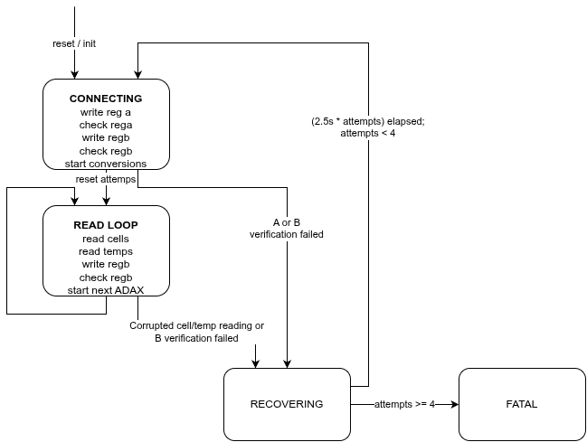

- Generated by
 1.12.0
1.12.0
|
PER Firmware
|
Provides a high-level interface for managing ADBMS6380 battery management chips in a single-direction daisy chain configuration. It handles communication, configuration, measurement collection, and balancing for multi-module battery packs, supporting cell voltage, thermistor, and GPIO readings as well as error detection via PEC checks.
adbms_bms_t struct: nss_sw must be false in the SPI config).main (after GPIO setup): Call the periodic function regularly:
This updates cell voltage, thermistor readings, and error flags (and all the aggregate statistics) in the adbms_bms_t g_bms struct.
BMS task should have high priority to ensure timely updates of measurements and so that SPI communication is not delayed/interrupted.
After each periodic call, measurements, statistics, and status can be accessed via the ADBMS_ getters:
ADBMS_get_cell_voltage(&g_bms, module_idx, cell_idx): Per-module cell voltage in voltsADBMS_is_cell_discharging(&g_bms, module_idx, cell_idx): Whether a cell is actively discharging (balancing)ADBMS_get_cell_temp(&g_bms, module_idx, cell_therm_idx): Per-module cell thermistor temperature in Celsius (0 .. ADBMS_CELL_THERMS_PER_MODULE - 1)ADBMS_get_board_temp(&g_bms, module_idx, board_therm_idx): Per-module onboard PCB thermistor temperature in Celsius (0 .. ADBMS_BOARD_THERMS_PER_MODULE - 1)ADBMS_get_min/max/avg/sum_voltage(&g_bms): Pack-level cell voltage statisticsADBMS_get_min/max/avg_cell_temp(&g_bms): Pack-level cell thermistor temperature statisticsADBMS_get_min/max/avg_board_temp(&g_bms): Pack-level onboard PCB temperature statisticsADBMS_get_state(&g_bms): Current adbms_state_t (connecting, read loop, recovering, fatal)ADBMS_get_cell_voltage_pec_err(&g_bms, cmd_idx) and ADBMS_get_gpio_voltage_pec_err(&g_bms, cmd_idx): PEC error flags for cell and GPIO voltage read commands. In the case of a PEC error during reading cell or GPIO voltages (which require multiple read commands), only the specific command that failed will have its PEC error flag set and the rest of the voltages for successful commands will still be updated/valid and the pack-level statistics will be updated based on the new valid readings and the old readings for the failed commands.g_bms.devADBMS_set_balancing_enabled before the next periodic call: The balancing algorithm is a simple threshold-based approach:
MIN_V_FOR_BALANCE (defined in ABOX)MIN_DELTA_FOR_BALANCE (also defined in ABOX)adbms_config.h: Shared pack topology configurationadbms.c / adbms.h: High-level flow driver logic, pack statistics, balancing, state managementadbms6380.c / adbms6380.h: Low-level chip-specific protocol, SPI framing, register packing, multi-command readout, thermistor conversioncommands.h: static constexpr command definitions for ADBMS6380.pec.c / pec.h: PEC (CRC15/CRC10) calculations
RTOS_delay_ms(ADBMS6380_WAKE_DELAY_MS) in the wake-up sequence.ADBMS_MODULE_COUNT constant in adbms_config.h matches the actual number of modules and chips in your daisy chain configuration!!cell_thermistor_lut and board_thermistor_lut) from ../thermistor/thermistor.h